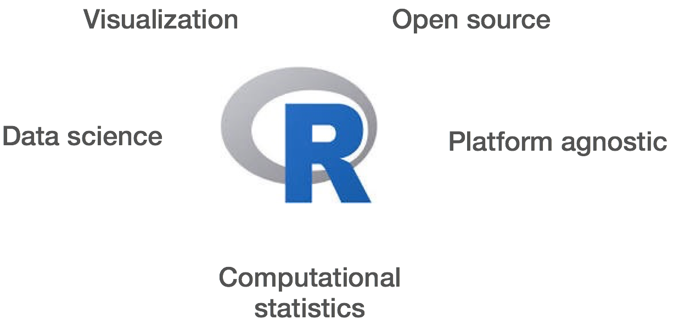
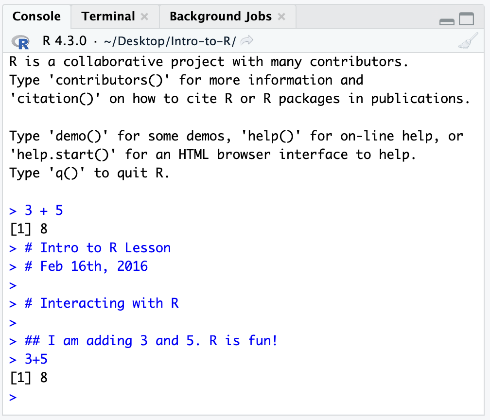

Basic Introduction to R and Rstudio
RMDA ARES40011
Approximate time: 15 minutes
Learning Objectives
- Describe R and RStudio.
- Interact with R using RStudio.
- Use the various features of RStudio.
What is R?
The common misconception is that R is a programming language, but in fact it is much more than that. Think of R as an environment for statistical computing and graphics, which brings together a number of features to provide powerful functionality.
The R environment combines:
- effective handling of big data
- collection of integrated tools
- graphical facilities
- simple and effective programming language
Why use R?

R is a powerful, extensible environment. It has a wide range of statistics and general data analysis and visualization capabilities.
- Data handling, wrangling, and storage
- Wide array of statistical methods and graphical techniques available
- Easy to install on any platform and use (and it’s free!)
- Open source with a large and growing community of peers
What is RStudio?
RStudio is freely available open-source Integrated Development Environment (IDE). RStudio provides an environment with many features to make using R easier and is a great alternative to working on R in the terminal.

- Graphical user interface, not just a command prompt
- Great learning tool
- Free for academic use
- Platform agnostic
- Open source
Creating a new project directory in RStudio
Let’s create a new project directory for our “Introduction to R” lesson today.
- Open RStudio
- Go to the
Filemenu and selectNew Project. - In the
New Projectwindow, chooseNew Directory. Then, chooseNew Project. Name your new directoryIntro-to-Rand then “Create the project as subdirectory of:” the Desktop (or location of your choice). - Click on
Create Project.

- After your project is completed, if the project does not automatically open in RStudio, then go to the
Filemenu, selectOpen Project, and chooseIntro-to-R.Rproj. - When RStudio opens, you will see three panels in the window.
- Go to the
Filemenu and selectNew File, and selectR Script. - Go to the
Filemenu and selectSave As..., typeIntro-to-R.Rand selectSave

The RStudio interface should now look like the screenshot below.

RStudio Interface
The RStudio interface has four main panels:
- Console: where you can type commands and see output. The console is all you would see if you ran R in the command line without RStudio.
- Script editor: where you can type out commands and save to file. You can also submit the commands to run in the console.
- Environment/History: environment shows all active objects and history keeps track of all commands run in console
- Files/Plots/Packages/Help
Organizing your working directory & setting up
Viewing your working directory
Before we organize our working directory, let’s check to see where our current working directory is located by typing into the console:
getwd()Your working directory should be the Intro-to-R folder constructed when you created the project. The working directory is where RStudio will automatically look for any files you bring in and where it will automatically save any files you create, unless otherwise specified.
You can visualize your working directory by selecting the Files tab from the Files/Plots/Packages/Help window.

If you wanted to choose a different directory to be your working directory, you could navigate to a different folder in the Files tab, then, click on the More dropdown menu and select Set As Working Directory.

Structuring your working directory
To organize your working directory for a particular analysis, you should separate the original data (raw data) from intermediate datasets. For instance, you may want to create a data/ directory within your working directory that stores the raw data, and have a results/ directory for intermediate datasets and a figures/ directory for the plots you will generate.

Let’s create these three directories within your working directory by clicking on New Folder within the Files tab.
When finished, your working directory should look like:

Adding files to your working directory
There are a few files that we will be working with in the next few lessons and you can access them using the links provided below. If you right click on the link, and “Save link as..”. Choose ~/Desktop/Intro-to-R/data as the destination of the file. You should now see the file appear in your working directory. We will discuss these files a bit later in the lesson.
- Download the normalized counts file by right clicking on this link
- Download metadata file using this link
NOTE: If the files download automatically to some other location on your laptop, you can move them to the your working directory using your file explorer or finder (outside RStudio), or navigating to the files in the
Filestab of the bottom right panel of RStudio
Setting up
This is more of a housekeeping task. We will be writing long lines of code in our script editor and want to make sure that the lines “wrap” and you don’t have to scroll back and forth to look at your long line of code.
Click on “Code” at the top of your RStudio screen and select “Soft Wrap Long Lines” in the pull down menu.

Interacting with R
Now that we have our interface and directory structure set up, let’s start playing with R! There are two main ways of interacting with R in RStudio: using the console or by using script editor (plain text files that contain your code).
Console window
The console window (in RStudio, the bottom left panel) is the place where R is waiting for you to tell it what to do, and where it will show the results of a command. You can type commands directly into the console, but they will be forgotten when you close the session.
Let’s test it out:
3 + 5

Script editor
Best practice is to enter the commands in the script editor, and save the script. You are encouraged to comment liberally to describe the commands you are running using #. This way, you have a complete record of what you did, you can easily show others how you did it and you can do it again later on if needed.
The Rstudio script editor allows you to ‘send’ the current line or the currently highlighted text to the R console by clicking on the Run button in the upper-right hand corner of the script editor. Alternatively, you can run by simply pressing the Ctrl and Enter keys at the same time as a shortcut.
Now let’s try entering commands to the script editor and using the comments character # to add descriptions and highlighting the text to run:
# Intro to R Lesson
# Feb 16th, 2016
# Interacting with R
## I am adding 3 and 5. R is fun!
3 + 5

Alternatively, you can run by simply pressing the Ctrl and Return/Enter keys at the same time as a shortcut.

You should see the command run in the console and output the result.

What happens if we do that same command without the comment symbol #? Re-run the command after removing the # sign in the front:
I am adding 3 and 5. R is fun!
3 + 5Now R is trying to run that sentence as a command, and it doesn’t work. We get an error in the console “Error: unexpected symbol in”I am” means that the R interpreter did not know what to do with that command.”
Console command prompt
Interpreting the command prompt can help understand when R is ready to accept commands. Below lists the different states of the command prompt and how you can exit a command:
Console is ready to accept commands: >.
If R is ready to accept commands, the R console shows a > prompt.
When the console receives a command (by directly typing into the console or running from the script editor (Ctrl-Enter), R will try to execute it.
After running, the console will show the results and come back with a new > prompt to wait for new commands.
Console is waiting for you to enter more data: +.
If R is still waiting for you to enter more data because it isn’t complete yet, the console will show a + prompt. It means that you haven’t finished entering a complete command. Often this can be due to you having not ‘closed’ a parenthesis or quotation.
Escaping a command and getting a new prompt: esc
If you’re in Rstudio and you can’t figure out why your command isn’t running, you can click inside the console window and press esc to escape the command and bring back a new prompt >.
Best practices
Before we move on to more complex concepts and getting familiar with the language, we want to point out a few things about best practices when working with R which will help you stay organized in the long run:
- Code and workflow are more reproducible if we can document everything that we do. Our end goal is not just to “do stuff”, but to do it in a way that anyone can easily and exactly replicate our workflow and results. All code should be written in the script editor and saved to file, rather than working in the console.
- The R console should be mainly used to inspect objects, test a function or get help.
- Use
#signs to comment. Comment liberally in your R scripts. This will help future you and other collaborators know what each line of code (or code block) was meant to do. Anything to the right of a#is ignored by R. A shortcut for this isCtrl + Shift + Cif you want to comment an entire chunk of text.
This lesson has been developed by members of the teaching team at the Harvard Chan Bioinformatics Core (HBC). These are open access materials distributed under the terms of the Creative Commons Attribution license (CC BY 4.0), which permits unrestricted use, distribution, and reproduction in any medium, provided the original author and source are credited.
- The materials used in this lesson is adapted from work that is Copyright © Data Carpentry (http://datacarpentry.org/). All Data Carpentry instructional material is made available under the Creative Commons Attribution license (CC BY 4.0).